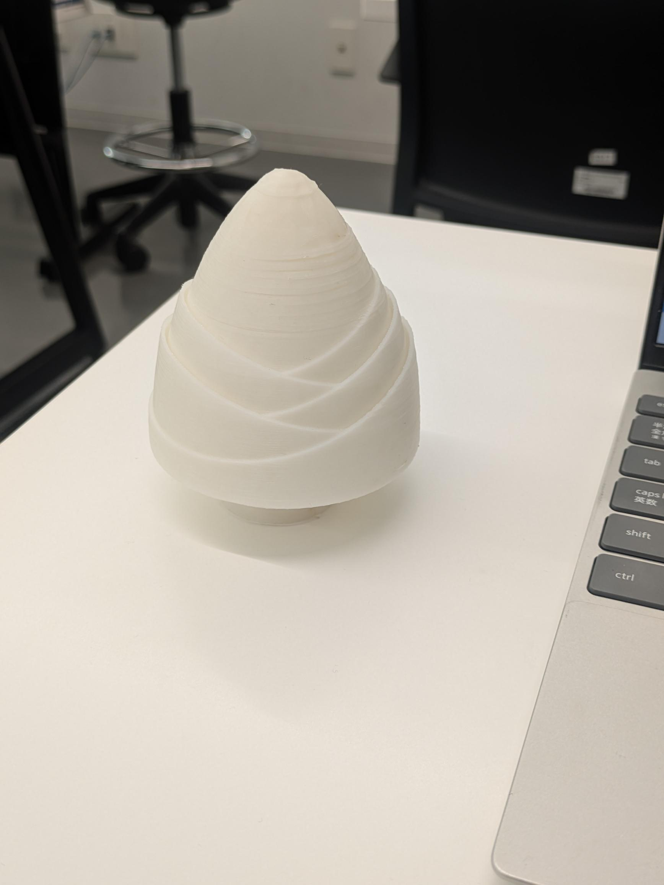
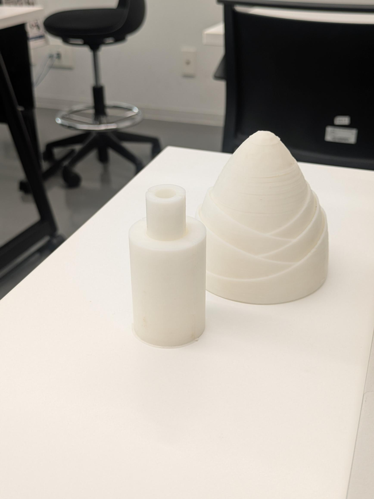
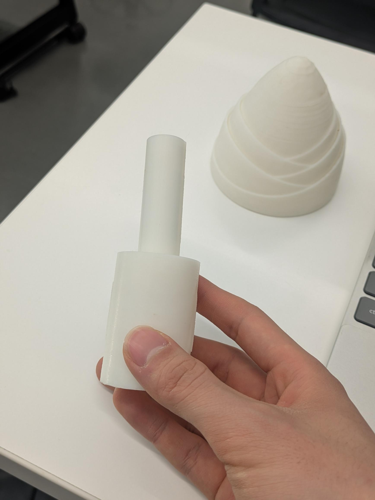
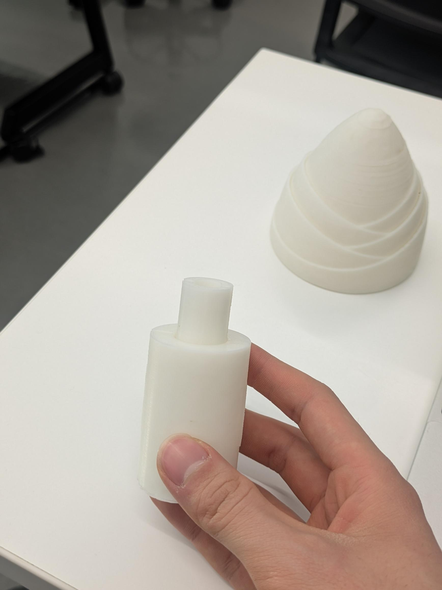

たけのこの里のばち
Overview
お菓子の「たけのこの里」の形をモチーフに、伸縮する構造を組み合わせた最終制作です。キャラクター性のある見た目と、実際に動かして使えるギミックを両立させています。
Concept
最終制作の見どころ
モチーフの楽しさを残しながら、伸縮する構造によって道具としての面白さも加えています。
親しみやすい形 — たけのこの里の印象的なシルエットを活かすことで、作品の個性が一目で伝わるようにしています。
伸縮する仕掛け — 見た目だけでなく、使う時に変化する構造を加えることで、触って楽しい最終課題としてまとめています。
Gallery
制作画像

全体のフォルム
モチーフの形が分かるように、印象的なシルエットを前面に出しています。

ディテール確認
造形のバランスや持った時の見え方が分かる角度です。

可動部分の様子
伸びる構造によって、単なる造形物ではない面白さを加えています。

伸縮した完成形
「伸縮自在」という特徴が伝わる、最終制作の象徴的な状態です。